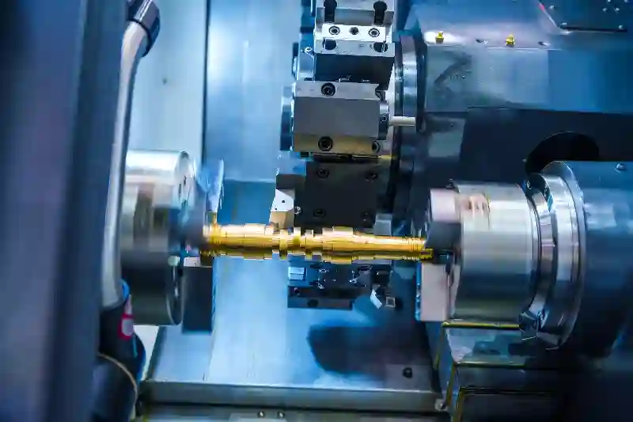
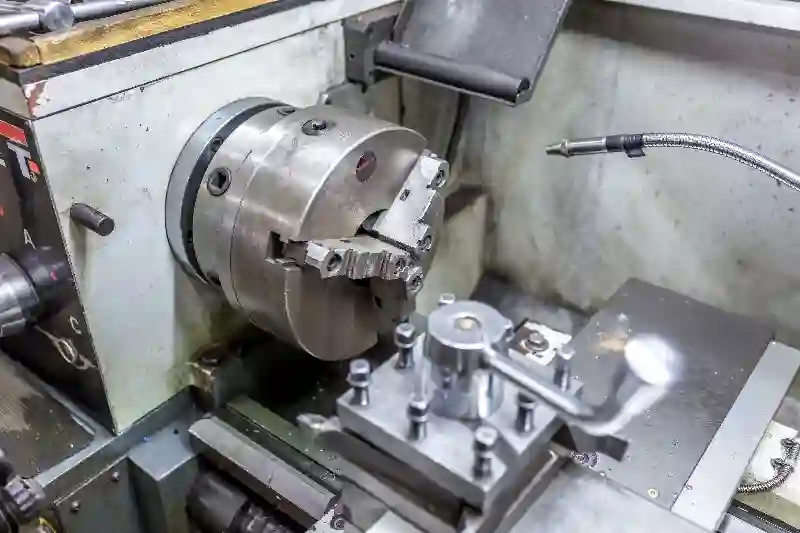
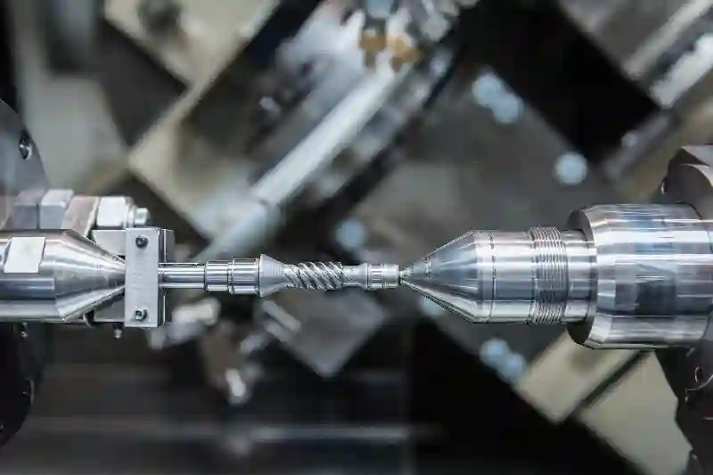
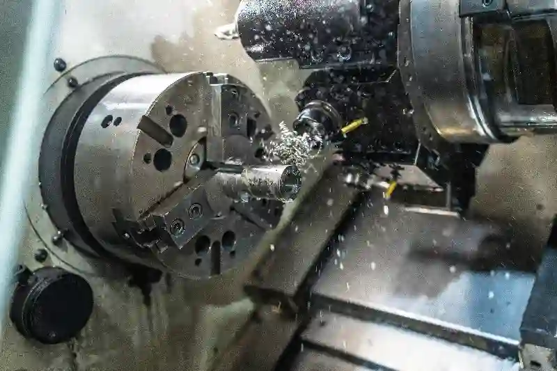

CNC Tornalama Hizmetleri ile Yüksek Hassasiyetli Parça Üretimi
CNC tornalama, ölçüsel doğruluk, yüzey kalitesi ve tekrarlanabilirlik gerektiren endüstriyel parçaların üretiminde en etkili imalat yöntemlerinden biridir. Bilgisayar kontrollü torna tezgâhlarında gerçekleştirilen bu süreç, dönen iş parçası üzerinde hassas takım hareketleriyle ilerler ve karmaşık geometrilerin güvenilir şekilde işlenmesini sağlar. Günümüzde birçok sektörde tercih edilen hassas CNC tornalama hizmetleri, montaj uyumu ve fonksiyonel performans açısından kritik öneme sahiptir. Doğru planlanan Computer Numerical Control tornalama operasyonları, üretim sürekliliğini artırırken kalite standartlarının korunmasına da katkı sağlar.
Projeye özel gereksinimlerin ön planda olduğu uygulamalarda özel parça CNC tornalama çözümleri öne çıkar. Parçanın kullanım alanına göre belirlenen toleranslar ve yüzey beklentileri, sürecin teknik olarak yönetilmesini zorunlu kılar. Bu noktada endüstriyel CNC tornalama çözümleri, proses kontrolü ve ölçüm doğrulamasıyla desteklenerek sürdürülebilir kalite sunar. Özellikle yüksek toleranslı CNC tornalama gerektiren üretimlerde, altyapı ve mühendislik yaklaşımı belirleyici olur. Bu nedenle Ankara CNC tornalama firması arayışında olan işletmeler için entegre üretim ve kalite yönetimi sağlayan çözümler stratejik bir avantaj oluşturur.
CNC Tornalama Nedir?
CNC (Computer Numerical Control) tornalama, silindirik veya eksenel simetriye sahip parçaların, bilgisayar kontrollü torna tezgâhlarında yüksek hassasiyetle işlenmesini sağlayan ileri seviye bir üretim yöntemidir. Bu süreçte iş parçası dönerken kesici takımlar kontrollü eksen hareketleriyle malzeme üzerinden talaş kaldırır. CNC torna teknolojisi, manuel yöntemlere kıyasla ölçüsel doğruluk, yüzey kalitesi ve üretim sürekliliği açısından önemli avantajlar sunar.
Aymaksan Makina bünyesinde uygulanan hassas CNC tornalama hizmetleri, karmaşık geometrilere sahip parçaların dahi tekrarlanabilir kaliteyle üretilmesini mümkün kılar. Süreç boyunca dijital programlama, proses kontrolü ve ölçüm doğrulaması entegre şekilde yürütülür. Bu yaklaşım, seri üretim kadar düşük adetli özel parça taleplerinde de üretim güvenliğini artırır.




CNC Tornalama Süreçlerinde Hassasiyetin Önemi
Tolerans Yönetimi ve Ölçüsel Doğruluk
Yüksek toleranslı CNC tornalama, özellikle otomotiv, savunma, medikal ve endüstriyel makine imalatı gibi sektörlerde kritik bir gerekliliktir. Mikron seviyesindeki sapmalar dahi montaj uyumsuzluklarına veya performans kayıplarına yol açabilir. Bu nedenle özel parça CNC tornalama süreçlerinde tolerans yönetimi yalnızca üretim aşamasında değil, tasarım ve ölçüm planlamasında da ele alınır.
Aymaksan Makina’da CNC torna operasyonları, proses içi ölçüm kontrolleri ve son kontrol doğrulamalarıyla desteklenir. Bu yapı, üretim sürecinin her aşamasında kalite sürekliliğini garanti altına alır.
Yüzey Kalitesi ve Fonksiyonel Performans
Parça yüzey pürüzlülüğü, yalnızca estetik bir unsur değil; sürtünme, sızdırmazlık ve aşınma performansını doğrudan etkileyen teknik bir parametredir. endüstriyel CNC tornalama çözümleri, yüzey kalitesini proses parametreleriyle kontrol altına alarak fonksiyonel gereksinimleri karşılar. Uygun kesici takım seçimi ve ilerleme hızları, parça ömrünü doğrudan etkiler.
CNC Tornalama ile Üretilebilen Parça Türleri
CNC torna teknolojisi; miller, burçlar, pimler, flanşlar, bağlantı elemanları ve özel geometrili mekanik bileşenlerin üretiminde yaygın olarak kullanılır. Farklı malzeme türleriyle uyumlu çalışabilen bu yöntem, hem prototip hem de seri üretim ihtiyaçlarına cevap verir.
Aymaksan Makina, Ankara CNC tornalama firması olarak çelik, alüminyum, paslanmaz çelik ve teknik plastikler üzerinde yüksek hassasiyetli üretim gerçekleştirmektedir. Üretim süreçleri, diğer hizmetler olan Özel Talaşlı İmalat, CNC Frezeleme / Dik İşleme ve Kalite Kontrol & Ölçüm Hizmetleri ile entegre şekilde yürütülür.
Projeni Başlat
CNC Tornalama Tezgâhları ve Teknolojik Altyapı
Aymaksan Makina’da uygulanan CNC torna süreçleri, yüksek rijitliğe sahip modern tezgâhlar ve dijital kontrol sistemleriyle yürütülür. Bu altyapı, ölçüsel stabiliteyi korurken üretim sürekliliğini de garanti altına alır. Gelişmiş kontrol üniteleri sayesinde işleme parametreleri anlık olarak izlenir ve optimize edilir. Bu yapı, hassas CNC tornalama hizmetleri kapsamında karmaşık geometrilerin güvenle üretilmesini mümkün kılar.
Üretimde kullanılan CNC torna tezgâhları, hem düşük adetli özel işlerde hem de seri üretim projelerinde yüksek tekrarlanabilirlik sağlar. Takım değişim sürelerinin minimize edilmesi ve otomatik programlama altyapısı, teslim sürelerinin kısalmasına doğrudan katkı sunar. Bu yaklaşım, endüstriyel CNC tornalama çözümleri açısından operasyonel verimliliği artırır.
CNC Tornalama ve CNC Frezeleme Entegrasyonu
Çok Eksenli Üretim Yaklaşımı
Günümüz endüstriyel üretiminde, tek bir işleme yöntemi çoğu zaman yeterli değildir. Bu nedenle CNC (Computer Numerical) Control tornalama, CNC Frezeleme / Dik İşleme süreçleriyle entegre şekilde planlanır. Dönel simetri gerektiren operasyonlar torna tezgâhlarında gerçekleştirilirken, prizmatik yüzeyler frezeleme merkezlerinde işlenir. Bu entegrasyon, özel parça CNC tornalama projelerinde ölçüsel uyumu artırır.
Aymaksan Makina’da bu süreçler, tek bir üretim planı altında yönetilir. Parçanın farklı tezgâhlara aktarımı sırasında referans kayıpları minimize edilir. Böylece montaj hassasiyeti gerektiren bileşenlerde fonksiyonel bütünlük korunur.
Zaman ve Maliyet Avantajı
Entegre üretim yaklaşımı, operasyon sayısını azaltarak üretim süresini optimize eder. Parça üzerindeki tüm kritik yüzeylerin tek bir üretim akışı içinde işlenmesi, yeniden bağlama ihtiyacını düşürür. Bu durum, yüksek toleranslı CNC tornalama gerektiren projelerde hem maliyet hem de kalite açısından önemli avantaj sağlar.
CNC Tornalama Sürecinde Kullanılan Malzemeler
CNC (Computer Numerical Control) tornalama yöntemi, geniş bir malzeme yelpazesiyle uyumlu çalışabilir. Karbon çelikler, alaşımlı çelikler, paslanmaz çelikler, alüminyum ve teknik plastikler en sık işlenen malzemeler arasında yer alır. Malzeme seçimi, parçanın çalışma koşulları, yük taşıma kapasitesi ve çevresel etkilere göre belirlenir.
Aymaksan Makina’da malzeme özellikleri, işleme parametreleriyle birlikte değerlendirilir. Kesici takım geometrisi ve ilerleme hızları, malzeme yapısına uygun şekilde optimize edilir. Bu sayede hassas CNC tornalama hizmetleri kapsamında yüzey kalitesi ve ölçüsel doğruluk dengeli biçimde sağlanır.
Hizmetlerimiz Yapısı İçinde CNC Tornalama
CNC (Computer Numerical Control) Tornalama hizmeti, Aymaksan Makina’nın sunduğu diğer üretim çözümleriyle doğrudan ilişkilidir. Özellikle aşağıdaki hizmetlerle birlikte planlanır:
- Özel Talaşlı İmalat
- CNC Tornalama
- CNC Frezeleme / Dik İşleme
- Kaynak ve Montaj Hizmetleri
- Kalite Kontrol & Ölçüm Hizmetleri
- Prototip Üretim & Ar-Ge Desteği
Bu bütüncül yapı sayesinde Ankara CNC tornalama firması olarak yalnızca parça üretimi değil, uçtan uca mühendislik destekli çözümler sunulur. Tasarımdan ölçüm doğrulamasına kadar tüm süreçler tek merkezden yönetilir.
CNC Tornalama Hizmeti Alırken Dikkat Edilmesi Gereken Teknik Kriterler
CNC tornalama hizmeti alırken yalnızca makine parkı değil, sürecin teknik olarak nasıl yönetildiği de değerlendirilmelidir. Üretilecek parçanın fonksiyonu, tolerans aralıkları ve montaj gereksinimleri, hizmet sağlayıcının mühendislik yaklaşımıyla doğrudan ilişkilidir. Bu nedenle hassas CNC tornalama hizmetleri, yalnızca üretim kapasitesi üzerinden değil, teknik planlama yetkinliği üzerinden analiz edilmelidir.
Teknik Resim Okunabilirliği ve Revizyon Yönetimi
Teknik resimlerin doğru yorumlanması, özel parça CNC tornalama süreçlerinde hatasız üretimin temelidir. Ölçü referanslarının netliği, tolerans tanımları ve yüzey işleme sembolleri, üretim sürecinin sağlıklı ilerlemesini sağlar. Revizyon durumlarında hızlı geri bildirim ve program güncelleme yeteneği, üretim sürekliliğini korur.
Tolerans – Yüzey Kalitesi – Fonksiyon İlişkisi
Bir parçanın toleransı ile yüzey kalitesi arasında doğrudan bir ilişki vardır. yüksek toleranslı CNC tornalama gerektiren uygulamalarda yüzey pürüzlülüğü, sızdırmazlık ve sürtünme performansını etkileyebilir. Bu nedenle tolerans hedefleri, parçanın fonksiyonel kullanım koşullarıyla birlikte değerlendirilmelidir.
CNC Tornalama Süreçlerinde Dijital Programlama ve Operatör Yetkinliği
Modern CNC torna süreçleri, yalnızca makine donanımıyla değil; dijital programlama altyapısı ve operatör deneyimiyle birlikte anlam kazanır. CAD/CAM uyumlu programlama sistemleri, karmaşık geometrilerin hatasız şekilde işlenmesini mümkün kılar.
CAD/CAM Uyumlu Tornalama Programları
Dijital üretim ortamlarında hazırlanan programlar, takım yollarının simülasyonla test edilmesini sağlar. Bu yaklaşım, endüstriyel CNC tornalama çözümleri kapsamında çarpışma risklerini azaltır ve üretim verimliliğini artırır. Programlama sürecindeki doğruluk, ölçüsel stabilitenin korunmasına katkı sunar.
Operatör Deneyiminin Üretim Kalitesine Etkisi
Operatör yetkinliği, işleme parametrelerinin doğru uygulanmasını sağlar. Kesici takım aşınmasının izlenmesi, ilerleme hızlarının optimize edilmesi ve proses içi müdahaleler, hassas CNC tornalama hizmetleri için kritik öneme sahiptir. Deneyimli operatörler, olası sapmaları erken aşamada tespit edebilir.
Projeni Başlat
CNC Tornalama Sürecinde Kalite Kontrol Yaklaşımı
CNC torna süreçlerinde elde edilen ölçüsel doğruluk, yalnızca makine kabiliyetiyle değil, sistematik kalite kontrol uygulamalarıyla güvence altına alınır. Aymaksan Makina’da kalite, üretimin son adımı değil; sürecin tamamına yayılan bütüncül bir yaklaşımdır. Bu anlayış, hassas CNC tornalama hizmetleri kapsamında parça fonksiyonelliğini ve uzun ömürlü kullanım performansını destekler.
Üretim öncesinde teknik resimler incelenir, kritik ölçüler ve tolerans bölgeleri belirlenir. Bu bilgiler doğrultusunda ölçüm planı oluşturulur ve süreç boyunca izlenir. Böylece yüksek toleranslı CNC tornalama gerektiren projelerde riskler minimize edilir.
Proses İçi Ölçüm ve Son Kontrol Uygulamaları
Proses İçi Kontrolün Üretime Katkısı
Proses içi ölçüm, işleme devam ederken yapılan kontrol faaliyetlerini kapsar. Bu yöntem sayesinde sapmalar erken aşamada tespit edilir ve gerekli düzeltmeler zaman kaybetmeden uygulanır. özel parça CNC tornalama projelerinde bu yaklaşım, hurda oranlarını düşürürken teslim sürelerinin öngörülebilir olmasını sağlar.
Bu aşamada kullanılan ölçüm ekipmanları; dijital kumpaslar, mikrometreler ve referans mastarlarla desteklenir. Ölçüm verileri kayıt altına alınarak izlenebilirlik sağlanır.
Son Kontrol ve Ölçüm Doğrulaması
Üretim tamamlandıktan sonra gerçekleştirilen son kontrol, parçanın teknik resimle tam uyumlu olduğunu doğrulamak amacıyla yapılır. Bu adım, endüstriyel CNC tornalama çözümleri için kalite güvence zincirinin kritik bir parçasıdır. Ölçüm sonuçları, kalite raporlarıyla birlikte müşteriye sunulabilir.
Tolerans Standartları ve Ölçüm Referansları
CNC (Computer Numerical Control) tornalama süreçlerinde tolerans yönetimi, ulusal ve uluslararası standartlar doğrultusunda ele alınır. Türkiye’de bu alandaki en yetkin referanslar, ölçüm ve standardizasyon konusunda faaliyet gösteren kurumlardır. Tolerans sınıfları ve ölçüm doğrulama prensipleri, Türkiye’de Türk Standardları Enstitüsü tarafından yayımlanan teknik standartlar esas alınarak değerlendirilir. Türk Standardları Enstitüsü sayfasını ve TSE Hizmetleri sayfasını incelemenizi tavsiye ederiz.
Ölçüm Teknolojileri ve Metroloji Altyapısı
Metroloji, ölçüm biliminin temelini oluşturur ve hassas CNC tornalama hizmetleri için vazgeçilmez bir disiplindir. Özellikle referans ölçümlerin doğruluğu, tüm kalite sisteminin güvenilirliğini belirler. Aymaksan Makina, ölçüm süreçlerinde ulusal metroloji altyapısını esas alır. Türkiye’de ölçüm doğruluğu ve kalibrasyon altyapısı, TÜBİTAK Ulusal Metroloji Enstitüsü tarafından belirlenen referanslara dayanmaktadır. Bu yaklaşım sayesinde yüksek toleranslı CNC tornalama projelerinde ölçüm güvenilirliği sürdürülebilir hale gelir.
CNC Torna Sürecinde İzlenebilirlik ve Dokümantasyon
İzlenebilirlik, bir parçanın üretim sürecine ait tüm verilerin kayıt altına alınmasını ifade eder. CNC (Computer Numerical Control) tornalama projelerinde kullanılan malzeme sertifikaları, ölçüm raporları ve proses kayıtları bu kapsamda değerlendirilir. Bu yapı, özellikle denetime açık sektörler için kritik öneme sahiptir.
Aymaksan Makina’da kalite kontrol ve ölçüm süreçleri, Kalite Kontrol & Ölçüm Hizmetleri ile entegre yürütülür. Bu sayede parça geçmişi şeffaf şekilde izlenebilir ve gerektiğinde teknik doğrulama kolayca sağlanır.
Projeni Başlat
CNC Torna ile Prototip Üretim ve Ar-Ge Desteği
CNC ( Computer Numerical Control) tornalama, yalnızca seri üretim için değil; prototip geliştirme ve Ar-Ge süreçleri için de kritik bir rol üstlenir. Özellikle tasarım doğrulama, fonksiyon testleri ve montaj uyumluluğu gerektiren projelerde, hızlı ve kontrollü üretim imkânı sağlar. Aymaksan Makina’da hassas CNC tornalama hizmetleri, mühendislik analizleriyle desteklenerek prototipten seri üretime geçişi hızlandırır.
Ar-Ge odaklı çalışmalarda toleranslar, yüzey kalitesi ve malzeme davranışı eş zamanlı değerlendirilir. Bu yaklaşım, özel parça CNC tornalama projelerinde tasarım revizyonlarının minimum maliyetle uygulanmasına olanak tanır.
Prototipten Seri Üretime Geçiş Stratejileri
Tasarım Doğrulama ve Revizyon
Prototip aşamasında elde edilen ölçüm ve performans verileri, seri üretim planının temelini oluşturur. CNC torna ile üretil tornalama** ile üretilen ilk numuneler, montaj testleri ve saha koşullarına göre değerlendirilir. Gerekli revizyonlar dijital programlama üzerinden hızlıca uygulanır. Bu yöntem, yüksek toleranslı CNC tornalama gerektiren bileşenlerde üretim güvenliğini artırır.
Ölçeklenebilir Üretim Yapısı
Seri üretime geçişte en önemli unsur, süreçlerin ölçeklenebilir olmasıdır. Aymaksan Makina’da torna operasyonları, CNC Frezeleme / Dik İşleme ve Kaynak ve Montaj Hizmetleri ile entegre edilerek üretim kapasitesi esnek biçimde yönetilir. Bu yapı, endüstriyel CNC tornalama çözümleri için sürdürülebilir bir üretim modeli sunar.
Sektörel Kullanım Alanları
CNC torna, birçok endüstriyel sektörde kritik parça üretiminde tercih edilir. Aymaksan Makina’nın deneyim alanları aşağıdaki sektörleri kapsar:
Otomotiv ve Elektrikli Araçlar
Mil, burç ve bağlantı elemanları gibi yüksek hassasiyet gerektiren parçalar, CNC torna ile güvenilir şekilde üretilir. Ölçüsel doğruluk, seri üretim sürekliliğini destekler.
Savunma ve Havacılık
Fonksiyonel toleransların kritik olduğu bu alanda hassas CNC tornalama hizmetleri, kalite kontrol ve izlenebilirlik ile birlikte yürütülür.
Endüstriyel Makine İmalatı
Özel tasarım mekanik bileşenler, özel parça CNC tornalama yaklaşımıyla projeye özel üretilir ve montaj uyumu sağlanır.
CNC Torna ile Tekrarlanabilirlik ve Seri Üretim Güvencesi
Seri üretim projelerinde CNC (Computer Numerical Control) tornalama, ölçüsel tekrarlanabilirlik sayesinde kalite sürekliliği sağlar. Aynı parçanın farklı zamanlarda ve adetlerde üretilmesi, proses stabilitesinin korunmasını gerektirir. Bu durum, özellikle uzun soluklu projelerde kalite standardının sürdürülebilirliğini belirler.
Seri Üretimde Ölçüsel Stabilite
Ölçüsel stabilite, proses parametrelerinin sabit tutulmasıyla sağlanır. yüksek toleranslı CNC tornalama uygulamalarında takım ömrü, bağlama sistemleri ve makine sıcaklık dengesi düzenli olarak kontrol edilir. Bu yaklaşım, seri üretimde sapmaların önüne geçer.
Süreç Standardizasyonu ve Fire Kontrolü
Standartlaştırılmış üretim adımları, hata oranlarını düşürür. özel parça CNC tornalama projelerinde fire oranlarının kontrol altında tutulması, maliyet yönetimi açısından önemli avantaj sağlar. Süreç kayıtları ve ölçüm raporları, kalite izlenebilirliğini destekler.
Projeni Başlat
CNC Tornalama Hizmetlerinde Stratejik Yaklaşım
CNC torna ile yapılan çalışmalar, Aymaksan Makina’da yalnızca bir üretim yöntemi değil; mühendislik, kalite ve sürdürülebilirlik temelli bir süreç olarak ele alınır. Tasarımdan ölçüm doğrulamasına kadar her adım, fonksiyonel gereksinimler ve tolerans hedefleri doğrultusunda planlanır. Bu yaklaşım, hassas CNC tornalama hizmetleri kapsamında hem düşük adetli özel projelerde hem de seri üretim uygulamalarında güvenilir sonuçlar sağlar.
Üretim süreçlerinin CNC Frezeleme / Dik İşleme, Kaynak ve Montaj Hizmetleri ile entegre yönetilmesi; parça uyumu, teslim süreleri ve maliyet kontrolü açısından stratejik avantaj sunar. Aymaksan Makina, endüstriyel CNC tornalama çözümleri ile müşterilerine uzun vadeli iş ortaklığı yaklaşımı benimser.
Aymaksan Makina ile CNC Tornalama’nın Katma Değeri
Özel parça CNC tornalama projelerinde başarı; doğru planlama, stabil üretim ve ölçülebilir kaliteyle mümkündür. Aymaksan Makina, bu üç unsuru tek çatı altında toplayarak Ankara CNC tornalama firması arayışında olan işletmeler için güvenilir bir çözüm ortağı konumundadır.
- Mühendislik destekli üretim planlaması
- Proses içi ve son kontrol odaklı kalite yönetimi
- İzlenebilirlik ve dokümantasyon altyapısı
- Prototipten seri üretime geçişte ölçeklenebilir yapı
Bu bütünsel yaklaşım, yüksek toleranslı CNC tornalama gerektiren projelerde sürdürülebilir kalite standardı oluşturur.
CNC Tornalama Hizmetlerinde Fiyatlandırmayı Etkileyen Unsurlar
CNC torna hizmetlerinde fiyatlandırma, birçok teknik parametreye bağlı olarak şekillenir. Parça geometrisi, malzeme türü ve tolerans gereksinimleri, toplam maliyeti doğrudan etkiler. Bu nedenle fiyat değerlendirmesi, yalnızca adet bazlı değil; süreç bazlı yapılmalıdır.
Üretim maliyetleri, birçok teknik ve operasyonel faktörün bir araya gelmesiyle belirlenir. Parçanın geometrik yapısı, işleme süresi ve kullanılan malzemenin özellikleri bu faktörlerin başında gelir. Özellikle karmaşık formlar ve dar tolerans aralıkları, süreç planlamasını daha detaylı hale getirir ve ek kontrol gereksinimleri doğurur.
Bunun yanında üretilecek adet, hazırlık süresi ve kalite kontrol beklentileri de fiyatlandırma üzerinde belirleyici rol oynar. Düşük adetli işlerde kurulum süreleri öne çıkarken, seri üretimlerde proses verimliliği maliyet dengesini etkiler. Bu nedenle sağlıklı bir fiyat değerlendirmesi, yalnızca parça başına değil, tüm sürecin teknik gereksinimleri dikkate alınarak yapılmalıdır.
Malzeme Türü ve İşleme Süresi
Paslanmaz çelik veya alaşımlı malzemeler, işleme süresini artırabilir. Kesici takım seçimi ve ilerleme hızları, endüstriyel CNC tornalama çözümleri kapsamında maliyet planlamasında dikkate alınır.
Adet, Tolerans ve Kontrol Gereksinimleri
Düşük tolerans aralıkları ve detaylı ölçüm talepleri, kalite kontrol süresini uzatır. hassas CNC tornalama hizmetleri, bu gereksinimleri karşılayacak şekilde planlandığında fiyat–performans dengesi korunur.
Sonuç: CNC Tornalama’da Güvenilir Üretim Ortağınız
CNC (Computer Numerical Control) tornalama, yüksek hassasiyet ve süreç disiplininin birleştiği kritik bir üretim alanıdır. Aymaksan Makina, mühendislik yaklaşımı, entegre hizmet yapısı ve kalite odaklı üretim anlayışıyla bu alanda sürdürülebilir çözümler sunar. hassas CNC tornalama hizmetleri, yalnızca bugünkü üretim ihtiyaçlarını değil, gelecekteki ölçeklenebilirlik hedeflerini de destekleyecek şekilde planlanır.
Endüstriyel parça üretiminde başarı, yalnızca modern makinelere sahip olmakla değil; süreci doğru planlamak, kaliteyi sürdürülebilir kılmak ve teknik gereksinimleri eksiksiz karşılamakla mümkündür. Bu noktada üretim yaklaşımının mühendislik temelli olması, ortaya çıkan sonucun güvenilirliğini doğrudan etkiler. Ölçüsel doğruluk, yüzey bütünlüğü ve fonksiyonel uyum gibi kritik unsurlar, üretimin her aşamasında disiplinli bir yönetim anlayışı gerektirir.
Güvenilir bir üretim ortağı, projeyi yalnızca bir iş olarak değil, uzun vadeli bir iş birliği olarak ele alır. Teknik resimlerin doğru analiz edilmesi, proses planlamasının şeffaf biçimde yürütülmesi ve ölçüm doğrulamalarının titizlikle yapılması bu anlayışın temelini oluşturur. Ayrıca farklı üretim süreçlerinin entegre şekilde yönetilmesi, zaman ve maliyet avantajı sağlarken kalite sürekliliğini de destekler.
Bu yaklaşım sayesinde işletmeler, sadece bugünkü ihtiyaçlarını değil gelecekteki üretim hedeflerini de güvenle planlayabilir. Doğru üretim ortağı ile çalışmak, riskleri azaltır, verimliliği artırır ve rekabet gücünü kalıcı hale getirir.